Workshop 1
Hieronder staan de gemaakte opdrachten met bijbehorende video's, foto's en screenshot van code van workshop 1 van Arduino.
Opdracht 1

Opdracht 2

Opdracht 3

Opdracht 4

Opdracht 5

Opdracht 6

Opdracht 7


Workshop 2
Hieronder staan de gemaakte opdrachten met bijbehorende video's, foto's en screenshot van code van workshop 2 van Arduino.
Opdracht 8
.png) 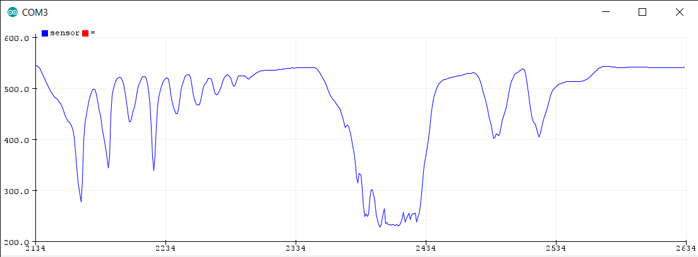
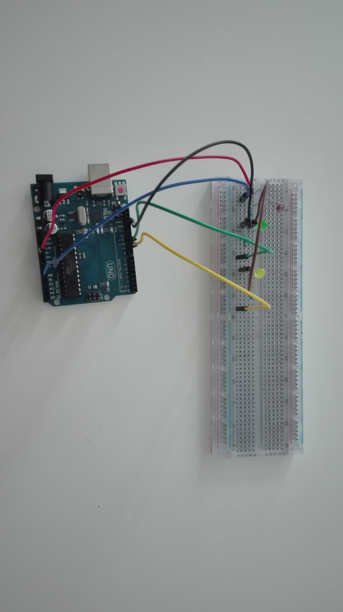
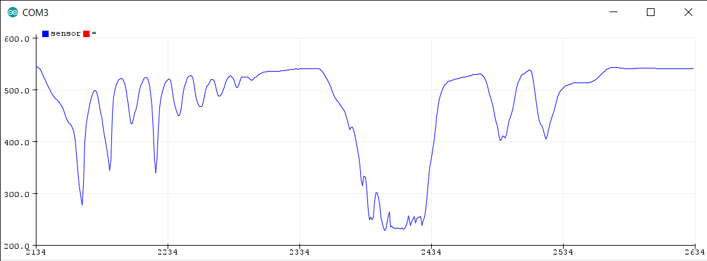
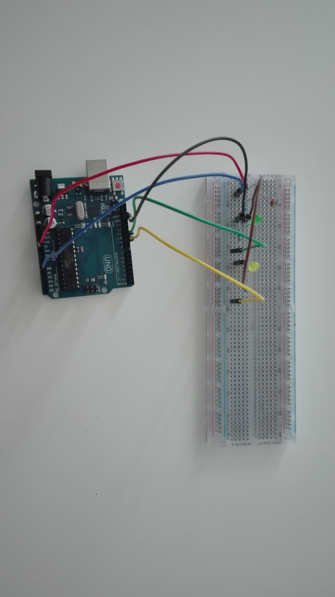
Opdracht 9
.png) 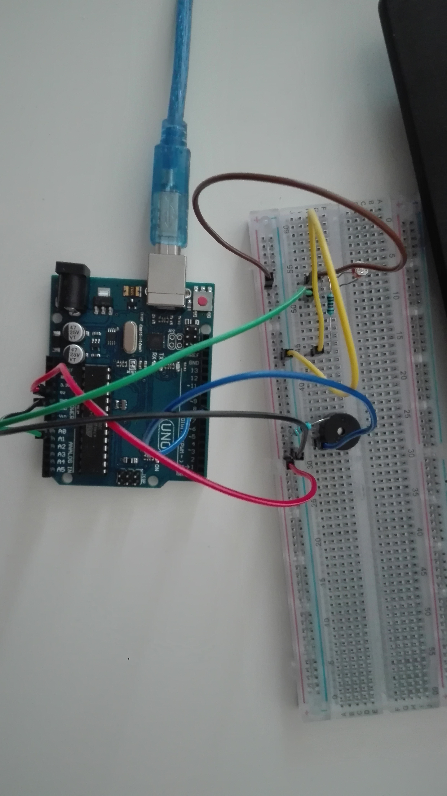
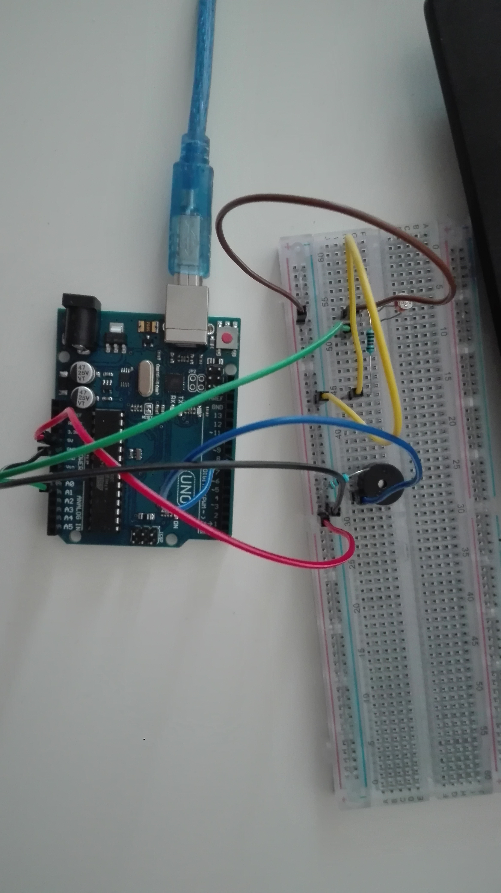
Opdracht 10
De NTC werkt op basis van de temperatuur. Nou was het zo dat mijn ene hand heel koud was (476) en mijn andere hand juist heel warm (520). Door de NTC met mijn ene hand aan te raken ging het ledje uit en wanneer ik de NTC dan weer met mijn andere hand aanraakte ging die weer aan.
.png) 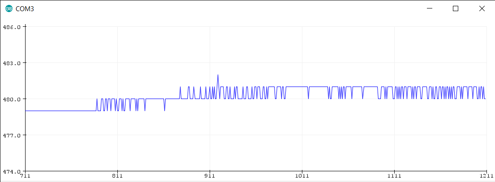
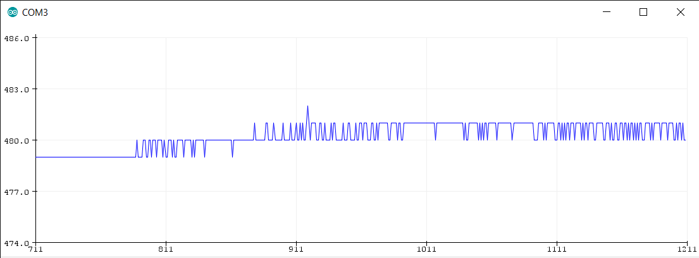
.jpg)
Opdracht 11
.png)
.png) 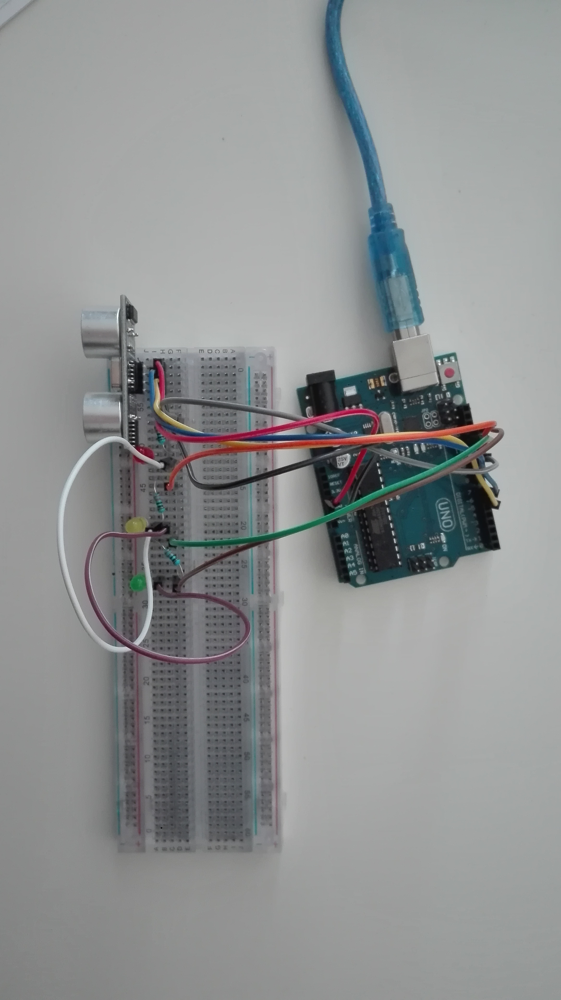
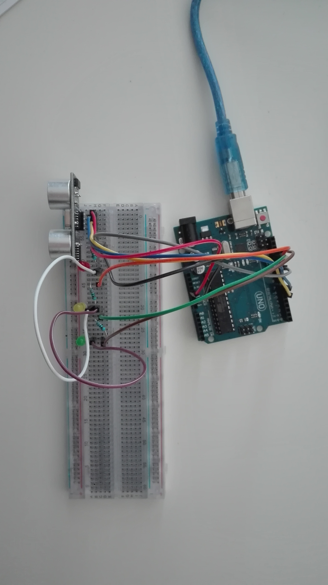
Workshop 3
Hieronder staan de gemaatke opdrachten met bijbehorende video's, foto's en screenshots van code die horen bij wrokshop 3
Opdracht 12
Ik heb zelf de code iets uitgebreid, zodat je twee cirkels ziet en nog een vierkant.

 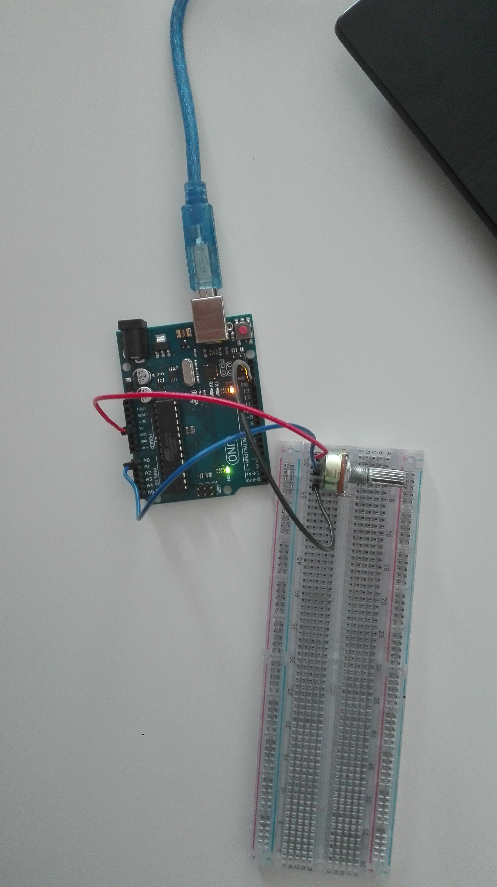
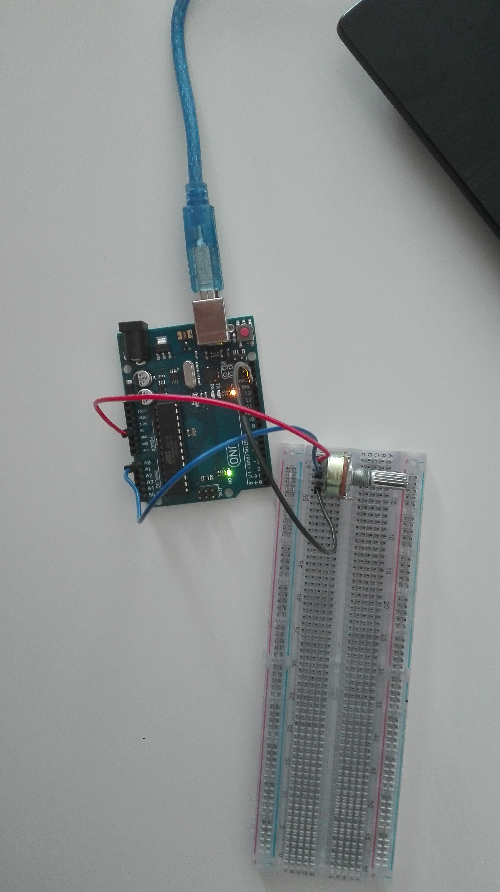
Opdracht 13

Opdracht 14

Opdracht 15
Ik heb gekozen om alle uiteindes in te wikkelen in aluminiumfolie en deze vast te plakken op een papietje, zodat je makkelijk de uiteindes kan bespelen.

 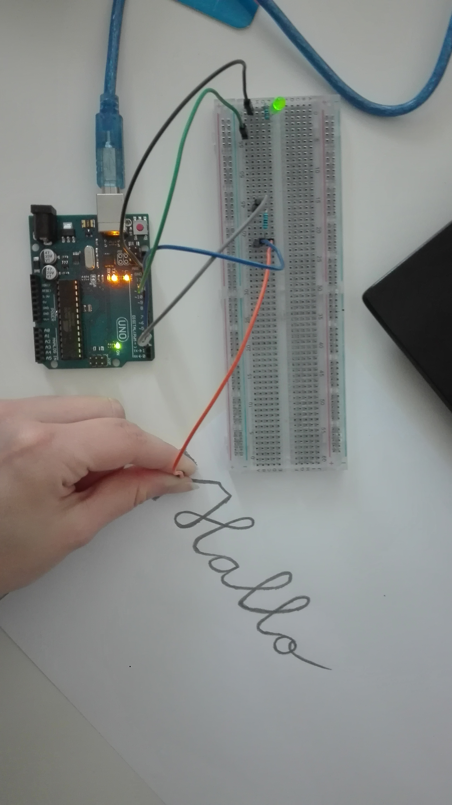
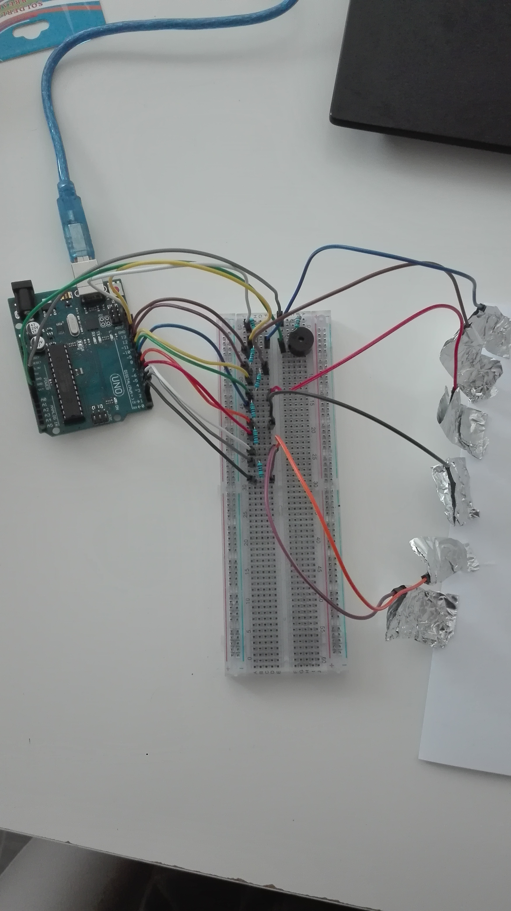
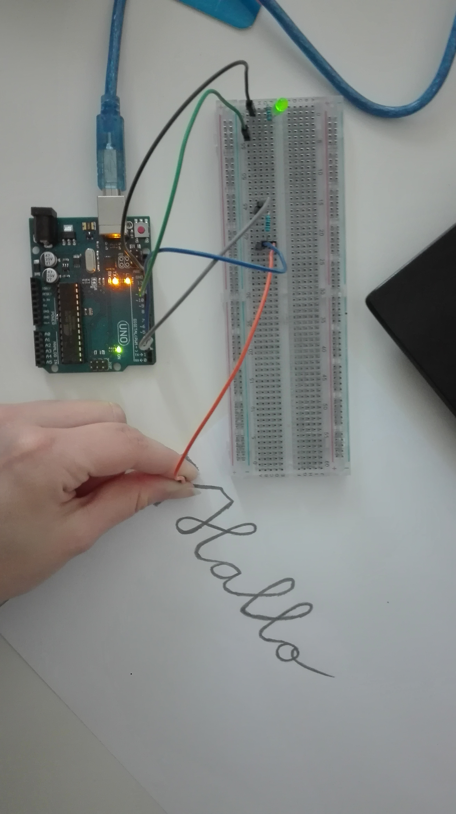
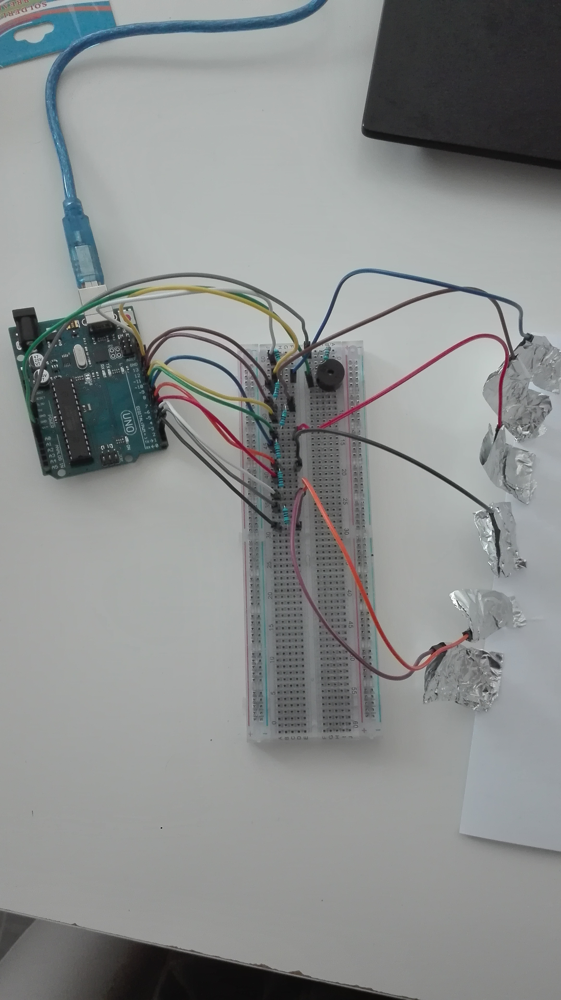